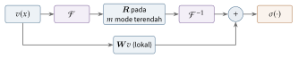

Bab 30
Belajar Menyelesaikan: Neural Operator dan Simulator
Bab ini juga tidak berasal dari satu mata kuliah. Kuliah geometric deep learning memberi bahasa graf dan ekuivariansi, kuliah machine learning lanjut memberi transformasi Fourier dan neural ODE, dan dosennya sendiri, Johannes Brandstetter, termasuk peneliti yang membentuk bidang ini, dari message passing PDE solver sampai transformer untuk fisika. Sisanya datang dari bacaan.
PINN mempelajari satu solusi. Kalau syarat awalnya berubah sedikit, pelatihan harus diulang. Neural operator dan simulator yang dipelajari mengambil tujuan yang lebih ambisius: belajar cara menyelesaikan sebuah keluarga persamaan, sehingga solusi untuk syarat awal, parameter, atau geometri baru bisa diperoleh dalam satu lintasan maju, sering ribuan kali lebih cepat dari solver klasik.
Dari fungsi ke fungsi
Solver numerik pada dasarnya adalah sebuah operator: ia memetakan satu fungsi, misalnya medan temperatur awal atau distribusi konduktivitas, ke fungsi lain, yaitu solusinya. Jaringan saraf biasa memetakan vektor berukuran tetap ke vektor berukuran tetap, sehingga terikat pada satu resolusi grid. Operator learning ingin belajar pemetaan antar ruang fungsi itu sendiri, sehingga model yang dilatih pada grid kasar bisa dievaluasi pada grid yang lebih halus (Kovachki dkk. 2021).
Contoh paling sederhana sebuah operator sudah kita kenal. Untuk persamaan panas \(\partial_tu=\kappa\,\partial_{xx}u\) di garis tak hingga, solusi pada waktu \(t\) adalah konvolusi syarat awal dengan kernel Gauss, \[u(x,t)=\int\frac{1}{\sqrt{4\pi\kappa t}}\exp\Big(-\frac{(x-y)^2}{4\kappa t}\Big)\,u_0(y)\,\mathrm{d}y .\] Operatornya linear: menjumlahkan dua syarat awal menjumlahkan solusinya. Di domain frekuensi, setiap mode Fourier \(e^{ikx}\) hanya diredam, dengan faktor \(e^{-\kappa k^2t}\). Mode dengan bilangan gelombang \(k=10\) meluruh seratus kali lebih cepat dari mode \(k=1\). Dua pengamatan ini, bahwa solusi bisa berupa operator integral dan bahwa ia sederhana di domain frekuensi, adalah benih dari Fourier neural operator di bawah. Untuk persamaan nonlinear seperti Navier–Stokes, tidak ada rumus seperti ini, dan jaringan harus mempelajari operatornya dari contoh.
DeepONet
DeepONet (Lu dkk. 2021) bertumpu pada teorema aproksimasi universal untuk operator. Operator \(G\) yang memetakan fungsi input \(v\) ke solusi \(G(v)\), dievaluasi di titik \(y\), didekati sebagai \[G(v)(y)\approx\sum_{k=1}^pb_k(v)\,t_k(y).\] Jaringan branch menerima nilai \(v\) di sejumlah titik sensor tetap dan mengeluarkan koefisien \(b_k\). Jaringan trunk menerima koordinat \(y\) dan mengeluarkan fungsi basis \(t_k(y)\). Bentuk ini mengingatkan pada ekspansi deret seperti Fourier atau POD (Bab 31), dengan perbedaan bahwa basis dan koefisiennya sama-sama dipelajari. Karena trunk menerima koordinat kontinu, keluarannya bisa dievaluasi di titik mana pun.
Untuk operator linear, bentuk ini bisa dipahami secara konkret. Misalkan \(G\) adalah operator panas di atas pada selang dengan ujung bernilai nol, dan solusi diuraikan dalam mode sinus, \(t_k(y)=\sin(k\pi y)\). Koefisien setiap mode pada waktu \(t\) adalah koefisien syarat awal dikali \(e^{-\kappa(k\pi)^2t}\), sebuah fungsi linear dari nilai-nilai \(v\) di titik sensor. Branch dalam kasus ini cukup menjadi lapisan linear, dan trunk cukup mengeluarkan fungsi sinus. Untuk operator nonlinear, kedua jaringan harus menemukan basis dan koefisien yang cocok sendiri. Varian yang dilatih bersama residual persamaan, seperti PINN, disebut physics-informed DeepONet.
Fourier neural operator
Fourier neural operator (Li dkk. 2020) berangkat dari bentuk solusi banyak PDE linear: konvolusi syarat awal dengan sebuah kernel, seperti kernel Gauss pada persamaan panas di Bab 15. Satu lapisan FNO memakai operator integral dengan kernel yang dipelajari, \[(\mathcal Kv)(x)=\int\kappa(x-y)\,v(y)\,\mathrm{d}y.\] Karena kernel hanya bergantung pada selisih \(x-y\), operator ini adalah konvolusi, dan teorema konvolusi (Bab 11) mengubahnya menjadi perkalian di domain frekuensi: \[\mathcal Kv=\mathcal F^{-1}\big(\boldsymbol R\cdot\mathcal Fv\big),\] dengan \(\boldsymbol R\) bobot yang dipelajari untuk setiap frekuensi. FNO hanya menyimpan bobot untuk sejumlah kecil frekuensi terendah dan membuang sisanya. Satu lapisan lengkap menjumlahkan operator spektral ini dengan transformasi linear lokal, lalu menerapkan nonlinearitas. Dengan FFT, biayanya sebanding dengan \(N\log N\) untuk \(N\) titik grid, dan karena bobotnya didefinisikan per frekuensi, bukan per titik grid, model yang sama bisa dijalankan pada resolusi yang berbeda. Pemotongan frekuensi juga punya sisi buruk: struktur yang tajam, seperti gelombang kejut, sulit diwakili oleh sedikit mode Fourier. FFT juga mengandaikan grid teratur dan domain periodik, sehingga untuk geometri yang rumit dibutuhkan varian yang memetakan geometri ke grid teratur lebih dulu.
Berapa banyak parameternya? Untuk lebar kanal \(d\) dan \(m\) mode yang disimpan dalam dua dimensi, setiap lapisan spektral menyimpan matriks kompleks \(d\times d\) untuk setiap mode, kira-kira \(m^2d^2\) bilangan kompleks. Dengan \(d=32\) dan dua belas mode di setiap arah, itu sekitar \(1{,}5\) juta bilangan kompleks per lapisan, dan jumlah ini tidak bergantung pada resolusi grid. Jaringan konvolusi biasa dengan kernel \(3\times3\) jauh lebih hemat parameter, tetapi hanya melihat tetangga dekat. FNO melihat seluruh domain dalam satu lapisan, sesuai dengan watak persamaan eliptik seperti persamaan tekanan, di mana perubahan di satu titik langsung terasa di mana-mana.
Gambar 30.1 merangkum satu lapisan FNO.

Simulator berbasis graf
Grid teratur jarang ditemui dalam simulasi teknik. Mesh menyesuaikan diri dengan geometri, dan partikel bergerak bebas. Di sini jaringan graf (Bab 13) menjadi alat alami. Graph Network-based Simulator (Sanchez-Gonzalez dkk. 2020) memperlakukan setiap partikel sebagai simpul dan menghubungkan partikel yang berdekatan dengan sisi. Arsitekturnya mengikuti pola encode–process–decode: keadaan setiap partikel dikodekan menjadi vektor laten, beberapa langkah message passing menyebarkan informasi interaksi, lalu decoder mengeluarkan percepatan setiap partikel. Posisi baru dihitung dengan integrator sederhana, dan langkah itu diulang. Model yang dilatih pada air, pasir, dan cairan kental ini menghasilkan rollout yang stabil untuk ribuan langkah.
MeshGraphNets (Pfaff dkk. 2020) membawa gagasan yang sama ke mesh simulasi, dengan dua jenis sisi: sisi mesh yang mengikuti konektivitas elemen, dan sisi “dunia” antara simpul yang berdekatan di ruang walau tidak tersambung di mesh, misalnya untuk kain yang menyentuh dirinya sendiri. Model ini bahkan belajar menyesuaikan resolusi mesh. Message Passing Neural PDE Solvers (Brandstetter, Worrall, dan Welling 2022) merumuskan message passing sebagai solver PDE umum dan menunjukkan bahwa ia mencakup skema numerik klasik seperti beda hingga dan volume hingga sebagai kasus khusus. Hubungan ini sudah kita lihat di Bab 27: volume hingga adalah message passing fluks.
Simulator graf juga membawa simetri fisika ke dalam arsitekturnya. Masukan untuk sisi biasanya berupa posisi relatif dan jarak antara dua partikel, bukan posisi mutlak, sehingga model otomatis invarian terhadap translasi: mendorong seluruh gelas air satu meter ke kanan tidak mengubah fisikanya. Karena setiap partikel hanya bicara dengan tetangga dalam radius tertentu, biayanya sebanding dengan jumlah partikel, sama seperti simulasi partikel klasik dengan daftar sel di Bab 28. Dan jumlah pesan yang dikirim sama dengan yang diterima kalau pesan dibuat antisimetris, sehingga momentum total terjaga, gagasan yang sama dengan hukum ketiga Newton.
Satu langkah message passing dengan angka memperlihatkan apa yang dihitung jaringan seperti ini. Ambil tiga partikel di garis, di posisi \(0\), \(1\), dan \(3\), dengan radius tetangga \(1{,}5\), sehingga partikel pertama dan kedua bertetangga, sedangkan yang ketiga sendirian. Misalkan fungsi pesan yang dipelajari kebetulan berbentuk pegas, \(m_{ij}=k\,\big(|x_j-x_i|-\ell\big)\,\mathrm{sgn}(x_j-x_i)\) dengan panjang istirahat \(\ell=0{,}8\) dan \(k=2\). Pesan dari partikel kedua ke partikel pertama adalah \(2(1-0{,}8)\cdot(+1)=0{,}4\), dan dari pertama ke kedua \(2(1-0{,}8)\cdot(-1)=-0{,}4\). Partikel ketiga tidak menerima pesan apa pun. Kalau decoder menerjemahkan jumlah pesan menjadi percepatan, partikel pertama dan kedua saling menarik dengan percepatan yang sama besar dan berlawanan arah, dan pusat massa keduanya tidak bergerak. Jaringan sungguhan tidak diberi bentuk pegas. Ia mempelajari fungsi pesan dari data, dan karena masukannya hanya posisi relatif, sifat seperti invariansi translasi ikut terbawa ke apa pun yang dipelajarinya.
Masalah rollout
Hampir semua simulator yang dipelajari bekerja secara autoregresif: tebak langkah berikutnya, lalu pakai tebakan itu sebagai input untuk langkah selanjutnya. Galat kecil di setiap langkah tidak hanya menumpuk, tetapi juga bisa diperbesar. Misalkan galat di langkah \(t\) adalah \(e_t\), model menambahkan galat baru \(\delta\) di setiap langkah, dan kepekaan langkah model terhadap inputnya diwakili faktor \(J\). Maka \(e_{t+1}\approx Je_t+\delta\), dan setelah \(T\) langkah \[e_T\approx\delta\sum_{k=0}^{T-1}J^k.\] Kalau \(|J|<1\), galat jenuh di sekitar \(\delta/(1-|J|)\). Kalau \(|J|\) sedikit lebih besar dari satu, galat tumbuh eksponensial. Dengan \(J=1{,}01\), setelah 500 langkah faktor \(J^{500}\approx145\). Model yang tampak sempurna dalam uji satu langkah bisa meledak dalam rollout panjang.
Ada masalah yang lebih halus. Selama pelatihan, model hanya melihat input dari simulasi sejati. Selama rollout, ia melihat input dari tebakannya sendiri, yang sedikit berbeda distribusinya. Ini covariate shift yang sama dengan behavioral cloning di Bab 16. Beberapa obat sudah dicoba: menambahkan noise pada input selama pelatihan agar model terbiasa dengan input yang tidak sempurna (Sanchez-Gonzalez dkk. 2020), melatih dengan rollout beberapa langkah, atau, seperti PDE-Refiner (Lippe dkk. 2023), memperhalus setiap tebakan dengan beberapa langkah denoising mirip model difusi, supaya komponen frekuensi tinggi dengan amplitudo kecil tidak diabaikan. Analisis spektrum sering menunjukkan bahwa model kehilangan detail halus lebih dulu, dan detail itulah yang kemudian merusak stabilitas.
Cara mengevaluasi juga perlu dipikirkan. Galat rata-rata kuadrat satu langkah hampir tidak mengatakan apa-apa tentang rollout panjang. Untuk aliran turbulen, yang kacau, dua simulasi yang mulai dari keadaan hampir sama pun akan berpisah setelah beberapa waktu, sehingga membandingkan medan titik demi titik setelah waktu itu tidak adil. Yang lebih bermakna adalah statistiknya: spektrum energi, profil rata-rata, distribusi besaran penting. Model yang baik menghasilkan aliran yang berbeda dari kenyataan tetapi punya statistik yang sama, seperti dua hari berangin yang tidak identik tetapi sama-sama khas untuk musim itu.
Untuk membandingkan model secara adil, komunitas memakai himpunan tolok ukur bersama. Galat yang paling sering dilaporkan adalah galat \(L^2\) relatif, \(\|\hat u-u\|/\|u\|\), dirata-ratakan atas kasus uji, pada satu langkah dan pada akhir rollout. Angka ini bisa menipu dengan dua cara. Galat relatif yang kecil bisa menyembunyikan galat besar di daerah kecil yang paling penting, misalnya di lapisan batas tempat gaya hambat ditentukan. Dan untuk sistem yang kacau, seperti dibahas di atas, galat titik demi titik pasti membesar setelah waktu tertentu, sehingga besaran yang diturunkan, seperti koefisien gaya, fluks panas, atau spektrum energi, lebih bermakna. Pertanyaan praktis lainnya adalah biaya total: berapa simulasi klasik yang dibutuhkan untuk menghasilkan data latih, berapa lama pelatihan, dan berapa kali model harus dipakai sebelum penghematannya menutup biaya itu.
Model fondasi untuk fisika dan cuaca
Keberhasilan paling mencolok terjadi di prakiraan cuaca, di mana data reanalisis global berpuluh tahun tersedia. FourCastNet (Pathak dkk. 2022) memakai operator Fourier yang adaptif. GraphCast (Lam dkk. 2023) memakai message passing di atas mesh ikosahedral berjenjang yang membungkus bumi, dan dalam banyak ukuran mengungguli sistem prakiraan numerik operasional untuk sepuluh hari ke depan, dengan waktu hitung kurang dari satu menit. GenCast (Price dkk. 2025) memakai model difusi untuk menghasilkan ensemble prakiraan yang probabilistik. Aurora (Bodnar dkk. 2024) dilatih pada beragam data atmosfer sebagai model fondasi yang bisa disetel ke tugas-tugas baru, seperti kualitas udara.
Gagasan model fondasi juga dibawa ke PDE secara umum. Pretraining pada banyak sistem fisika sekaligus (McCabe dkk. 2023) ternyata membantu ketika model disetel ke sistem baru dengan data sedikit. Kumpulan data besar seperti The Well (Ohana dkk. 2024) menyediakan simulasi dari banyak bidang fisika untuk melatih dan menguji model seperti ini. Universal Physics Transformers (Alkin dkk. 2024) memisahkan model dari diskretisasi: titik mesh atau partikel dikodekan ke ruang laten berukuran tetap, dinamika berjalan di ruang laten, dan decoder bisa ditanya di titik mana pun. Gupta dan Brandstetter (2022) membandingkan arsitektur secara sistematis pada berbagai skala ruang dan waktu.
Prakiraan cuaca juga memperlihatkan mengapa ensemble penting. Atmosfer kacau, sehingga satu prakiraan deterministik untuk sepuluh hari ke depan cenderung menjadi kabur: model yang dilatih dengan galat kuadrat belajar meramal rata-rata dari semua kemungkinan, dan rata-rata dari banyak badai yang mungkin adalah langit yang setengah mendung di mana-mana. Model generatif seperti GenCast menghasilkan banyak kemungkinan yang masing-masing tajam, dan sebaran di antara mereka menjadi ukuran ketidakpastian, sesuatu yang dibutuhkan untuk memutuskan, misalnya, apakah sebuah wilayah perlu dievakuasi.
Pertanyaan yang tetap harus diajukan
Kembali ke tiga pertanyaan di Bab 0. Fisika masuk ke model-model ini terutama lewat data dan arsitektur: simulasi yang benar sebagai data latih, dan ekuivariansi, lokalitas, serta konservasi sebagai struktur jaringan. Di luar jangkauan data latih, misalnya pada bilangan Reynolds lain atau geometri yang jauh berbeda, jaminannya tipis, dan pengujian harus dilakukan secara eksplisit. Biaya pelatihannya besar, sering setara ribuan simulasi klasik untuk menghasilkan data, sehingga keuntungan baru muncul kalau model dipakai berkali-kali, misalnya untuk optimasi desain, kendali waktu nyata, atau ensemble besar. Ulasan Lino dkk. (2023) dan Vinuesa dan Brunton (2022) memberi gambaran yang seimbang tentang kekuatan dan batas pendekatan ini dalam mekanika fluida.
Perkembangan riset
Gagasan model fondasi untuk PDE berkembang cepat. Poseidon (Herde dkk. 2024) adalah transformer operator multiskala yang dipretraining pada sekumpulan besar simulasi persamaan fluida, dengan trik yang memanfaatkan sifat semigrup PDE bergantung waktu: solusi dari waktu \(t_1\) ke \(t_3\) sama dengan solusi dari \(t_1\) ke \(t_2\) lalu dari \(t_2\) ke \(t_3\), sehingga setiap lintasan simulasi memberi banyak pasangan latih. Setelah disetel, ia dievaluasi pada lima belas tugas hilir, termasuk fisika yang tidak dilihat saat pretraining. DPOT (Hao dkk. 2024) memakai pretraining autoregresif dengan denoising, yaitu menambahkan noise pada input selama pretraining untuk mengatasi masalah rollout yang dibahas di atas, pada lebih dari seratus ribu lintasan dari belasan dataset PDE.
Untuk mesh tak teratur di geometri industri, Transolver (Wu dkk. 2024) mengelompokkan titik-titik mesh yang punya keadaan fisis serupa ke dalam “irisan” yang dipelajari, lalu menjalankan attention di antara irisan-irisan itu, bukan di antara jutaan titik. Biayanya linear terhadap jumlah titik, dan contoh penerapannya mencakup desain mobil dan airfoil. Gagasannya mirip dengan model reduksi di Bab 31: cari sedikit “keadaan” yang mewakili banyak titik.
Catatan sumber.
Bab ini dirangkai dari kuliah Deep Learning: Geometric Techniques, Machine Learning: Advanced Techniques, dan bacaan selama tugas akhir. Makalah utamanya: Lu dkk. (2021), Li dkk. (2020), Kovachki dkk. (2021), Sanchez-Gonzalez dkk. (2020), Pfaff dkk. (2020), Brandstetter, Worrall, dan Welling (2022), Lippe dkk. (2023), dan Lam dkk. (2023).